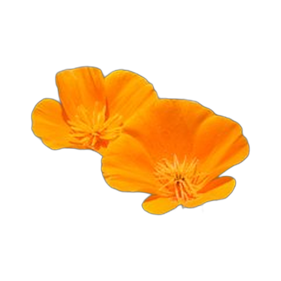

Bane of Extinction · owner beta
Stylized still + callout facts for what the game thinks it saw. Phone: wildlife camera scan.
Tap Load Claude callouts, or scan on a phone.

California poppy Eschscholzia californica
Still: California poppy subject cutout from Kaldari photo (CC0).
← Home · Camera scan · Claude facts for the guess (no Wikipedia)